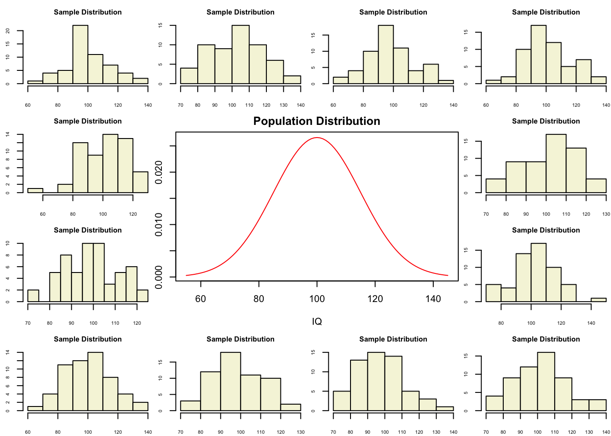
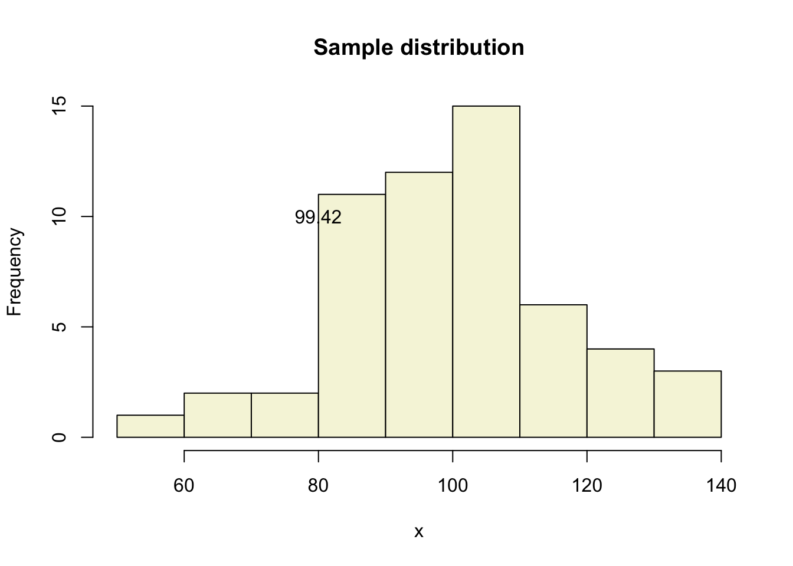
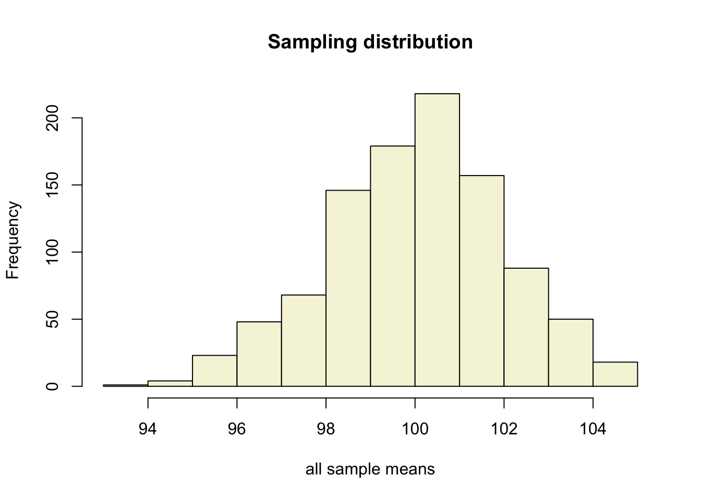
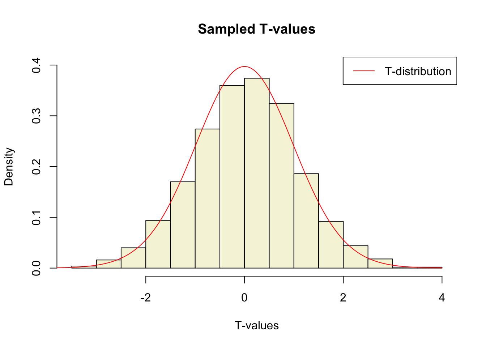
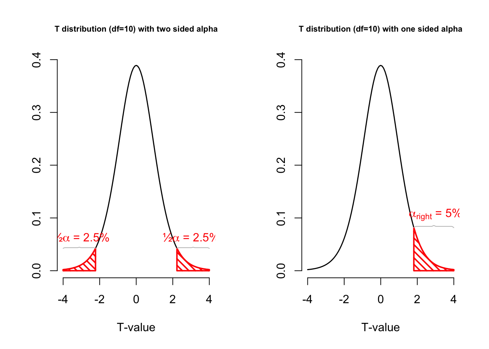
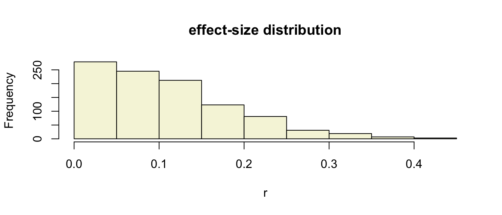
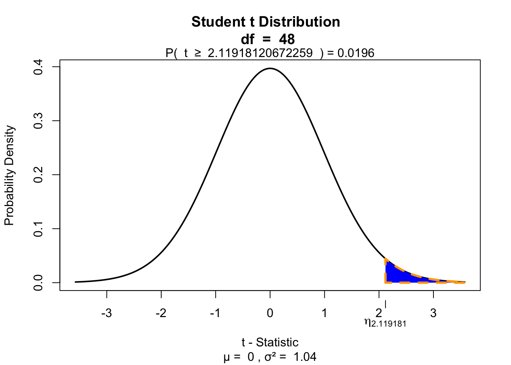
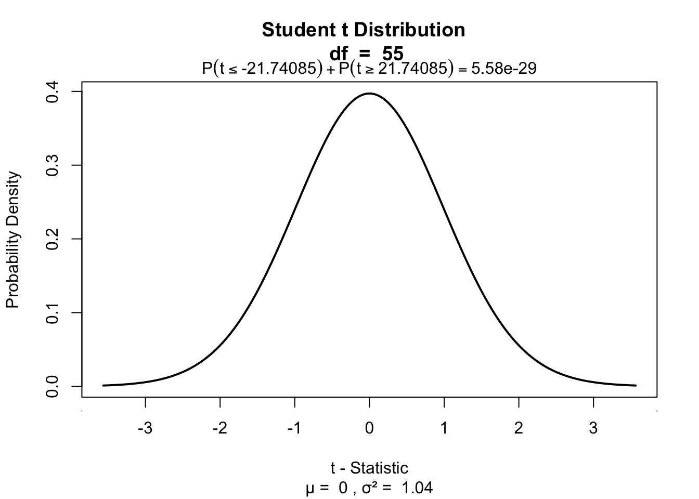

T-distribution and the
One-sample t-test
Klinkenberg
15 sep 2020
Inhoud
T-distribution
Gosset

In probability and statistics, Student’s t-distribution (or simply the t-distribution) is any member of a family of continuous probability distributions that arises when estimating the mean of a normally distributed population in situations where the sample size is small and population standard deviation is unknown.
In the English-language literature it takes its name from William Sealy Gosset’s 1908 paper in Biometrika under the pseudonym “Student”. Gosset worked at the Guinness Brewery in Dublin, Ireland, and was interested in the problems of small samples, for example the chemical properties of barley where sample sizes might be as low as 3.
Source: Wikipedia

Population distribution
layout(matrix(c(2:6,1,1,7:8,1,1,9:13), 4, 4))
n = 56 # Sample size
df = n - 1 # Degrees of freedom
mu = 100
sigma = 15
IQ = seq(mu-45, mu+45, 1)
par(mar=c(4,2,2,0))
plot(IQ, dnorm(IQ, mean = mu, sd = sigma), type='l', col="red", main = "Population Distribution")
n.samples = 12
for(i in 1:n.samples) {
par(mar=c(2,2,2,0))
hist(rnorm(n, mu, sigma), main="Sample Distribution", cex.axis=.5, col="beige", cex.main = .75)
}
T-statistic
\[T_{n-1} = \frac{\bar{x}-\mu}{SE_x} = \frac{\bar{x}-\mu}{s_x / \sqrt{n}}\]
So the t-statistic represents the deviation of the sample mean \(\bar{x}\) from the population mean \(\mu\), considering the sample size, expressed as the degrees of freedom \(df = n - 1\)
A sample
Let’s take one sample from our normal populatiion and calculate the t-value.
x = rnorm(n, mu, sigma); x## [1] 90.51016 101.16480 94.92502 86.06866 115.09797 96.43774 101.04681 137.65171 119.66889
## [10] 94.84335 108.75063 106.34414 83.14934 81.78539 111.10440 103.55524 89.27323 123.68869
## [19] 93.64828 59.77954 105.18172 104.37688 94.22584 103.90144 66.26008 94.99329 105.86573
## [28] 104.53662 90.38902 74.50135 73.56612 93.78079 114.56605 83.56902 108.10363 64.36580
## [37] 109.44024 82.95905 126.40673 107.50969 124.10399 97.85034 131.05859 111.35334 88.48276
## [46] 104.60590 89.28268 103.54148 131.33135 87.55978 96.91265 90.23557 82.88881 122.46896
## [55] 111.61067 87.25521hist(x, main = "Sample distribution", col = "beige")
text(80, 10, round(mean(x),2))
t-value
\[T_{n-1} = \frac{\bar{x}-\mu}{SE_x} = \frac{\bar{x}-\mu}{s_x / \sqrt{n}}\]
t = (mean(x) - mu) / (sd(x) / sqrt(n))
t## [1] -0.2575259More samples
let’s take more samples.
n.samples = 1000
mean.x.values = vector()
se.x.values = vector()
for(i in 1:n.samples) {
x = rnorm(n, mu, sigma)
mean.x.values[i] = mean(x)
se.x.values[i] = (sd(x) / sqrt(n))
}Mean and SE for all samples
head(cbind(mean.x.values, se.x.values))## mean.x.values se.x.values
## [1,] 97.80148 2.058823
## [2,] 107.73420 2.092620
## [3,] 100.14699 2.187660
## [4,] 102.63304 1.866385
## [5,] 102.70998 1.980412
## [6,] 101.07697 2.087270Sampling distribution
hist(mean.x.values,
col = "beige",
main = "Sampling distribution",
xlab = "all sample means")
Calculate t-values
\[T_{n-1} = \frac{\bar{x}-\mu}{SE_x} = \frac{\bar{x}-\mu}{s_x / \sqrt{n}}\]
t.values = (mean.x.values - mu) / se.x.values
tail(cbind(mean.x.values, mu, se.x.values, t.values))## mean.x.values mu se.x.values t.values
## [995,] 100.10709 100 2.251806 0.04755756
## [996,] 97.92625 100 1.788580 -1.15943763
## [997,] 100.78829 100 2.167220 0.36373449
## [998,] 100.46998 100 2.022490 0.23237926
## [999,] 98.46366 100 2.232258 -0.68824474
## [1000,] 100.72427 100 1.920569 0.37711423Sampled t-values
What is the distribution of all these t-values?
hist(t.values,
freq = F,
main = "Sampled T-values",
xlab = "T-values",
col = "beige",
ylim = c(0, .4))
T = seq(-4, 4, .01)
lines(T, dt(T,df), col = "red")
legend("topright", lty = 1, col="red", legend = "T-distribution")
T-distribution
So if the population is normaly distributed (assumption of normality) the t-distribution represents the deviation of sample means from the population mean (\(\mu\)), given a certain sample size (\(df = n - 1\)).
The t-distibution therefore is different for different sample sizes and converges to a standard normal distribution if sample size is large enough.
The t-distribution is defined by:
\[\textstyle\frac{\Gamma \left(\frac{\nu+1}{2} \right)} {\sqrt{\nu\pi}\,\Gamma \left(\frac{\nu}{2} \right)} \left(1+\frac{x^2}{\nu} \right)^{-\frac{\nu+1}{2}}\!\]
where \(\nu\) is the number of degrees of freedom and \(\Gamma\) is the gamma function.
Source: wikipedia

One or two sided
Two sided
- \(H_A: \bar{x} \neq \mu\)
One sided
- \(H_A: \bar{x} > \mu\)
- \(H_A: \bar{x} < \mu\)

Effect-size
The effect-size is the standardised difference between the mean and the expected \(\mu\). In the t-test effect-size is expressed as \(r\).
\[r = \sqrt{\frac{t^2}{t^2 + \text{df}}}\]
r = sqrt(t^2/(t^2 + df))
r## [1] 0.2603778Effect-size distribution
We can also calculate effect-sizes for all our calculated t-values. Under the assumption of \(H_0\) the effect-size distribution looks like this.
r = sqrt(t.values^2/(t.values^2 + df))
tail(cbind(mean.x.values, mu, se.x.values, t.values, r))## mean.x.values mu se.x.values t.values r
## [995,] 100.10709 100 2.251806 0.04755756 0.006412529
## [996,] 97.92625 100 1.788580 -1.15943763 0.154462270
## [997,] 100.78829 100 2.167220 0.36373449 0.048987064
## [998,] 100.46998 100 2.022490 0.23237926 0.031318642
## [999,] 98.46366 100 2.232258 -0.68824474 0.092405837
## [1000,] 100.72427 100 1.920569 0.37711423 0.050784457hist(r, main = "effect-size distribution", col = "beige")
Cohen (1988)
- Small: 0 <= .1
- Medium: .1 <= .3
- Large: .3 <= .5
Power
- Strive for 80%
- Based on know effect size
- Calculate number of subjects needed
- Use G*Power to calculate

Alpha Power
T = seq(-3,6,.01)
N = 45
E = 2
# Set plot
plot(0,0,
type = "n",
ylab = "Density",
xlab = "T",
ylim = c(0,.5),
xlim = c(-3,6),
main = "T-Distributions under H0 and HA")
critical_t = qt(.05,N-1,lower.tail=FALSE)
# Alpha
range_x = seq(critical_t,6,.01)
polygon(c(range_x,rev(range_x)),
c(range_x*0,rev(dt(range_x,N-1,ncp=0))),
col = "grey",
density = 10,
angle = 90,
lwd = 2)
# Power
range_x = seq(critical_t,6,.01)
polygon(c(range_x,rev(range_x)),
c(range_x*0,rev(dt(range_x,N-1,ncp=E))),
col = "grey",
density = 10,
angle = 45,
lwd = 2)
lines(T,dt(T,N-1,ncp=0),col="red", lwd=2) # H0 line
lines(T,dt(T,N-1,ncp=E),col="blue",lwd=2) # HA line
# Critical value
lines(rep(critical_t,2),c(0,dt(critical_t,N-1,ncp=E)),lwd=2,col="black")
text(critical_t,dt(critical_t,N-1,ncp=E),"critical T-value",pos=2, srt = 90)
# H0 and HA
text(0,dt(0,N-1,ncp=0),expression(H[0]),pos=3,col="red", cex=2)
text(E,dt(E,N-1,ncp=E),expression(H[A]),pos=3,col="blue",cex=2)
# Mu H0 line
lines(c(0,0),c(0,dt(0,N-1)), col="red", lwd=2,lty=2)
text(0,dt(0,N-1,ncp=0)/2,expression(mu),pos=4,cex=1.2)
# Mu HA line
lines(c(E,E),c(0,dt(E,N-1,ncp=E)),col="blue",lwd=2,lty=2)
text(E,dt(0,N-1,ncp=0)/2,expression(paste(mu)),pos=4,cex=1.2)
# t-value
lines( c(critical_t+.01,6),c(0,0),col="green",lwd=4)
# Legend
legend("topright", c(expression(alpha),'POWER'),density=c(10,10),angle=c(90,45))
One-sample t-test
IQ next to you

Models
\[\text{outcome} = \text{model} + \text{error}\]
Compare sample mean
We use the one-sample t-test to compare the sample mean \(\bar{x}\) to the population mean \(\mu\).
Let’s take a different sample of n = 43 and calculate the mean of this sample.
mu = 120
n = length(IQ.next.to.you)
x = IQ.next.to.you
mean_x = mean(x, na.rm = T)
sd_x = sd(x, na.rm = T)
cbind(n, mean_x, sd_x)## n mean_x sd_x
## [1,] 49 122.3265 7.684909Does this mean, differ significantly from the population mean \(\mu = 120\)?
Hypothesis
Null hypothesis
- \(H_0: \bar{x} = \mu\)
Alternative hypothesis
- \(H_A: \bar{x} \neq \mu\)
- \(H_A: \bar{x} > \mu\)
- \(H_A: \bar{x} < \mu\)
Assumptions
- Normal samples distribution
- Measurement level
- Interval
- Ratio
T-statistic
\[T_{n-1} = \frac{\bar{x}-\mu}{SE_x} = \frac{\bar{x}-\mu}{s_x / \sqrt{n}} = \frac{122.33 - 120 }{7.68 / \sqrt{49}}\]
So the t-statistic represents the deviation of the sample mean \(\bar{x}\) from the population mean \(\mu\), considering the sample size.
t = (mean_x - mu) / (sd_x / sqrt(n)); t## [1] 2.119181Type 1 error
To determine if this t-value significantly differs from the population mean we have to specify a type I error that we are willing to make.
- Type I error / \(\alpha\) = .05
P-value one sided
Finally we have to calculate our p-value for which we need the degrees of freedom \(df = n - 1\) to determine the shape of the t-distribution.
df = n - 1; df## [1] 48if(!"visualize" %in% installed.packages()) { install.packages("visualize") }
library("visualize")
visualize.t(t, df, section = "upper")
P-value two sided
visualize.t(c(-t, t), df, section = "tails")
Effect-size
\[r = \sqrt{\frac{t^2}{t^2 + \text{df}}}\]
r = sqrt(t^2/(t^2 + df))
r## [1] 0.2925001